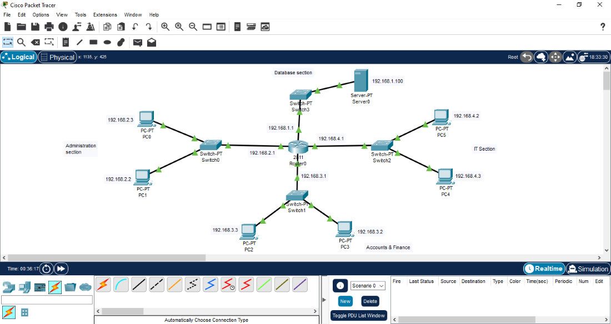
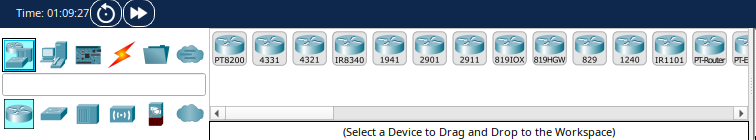
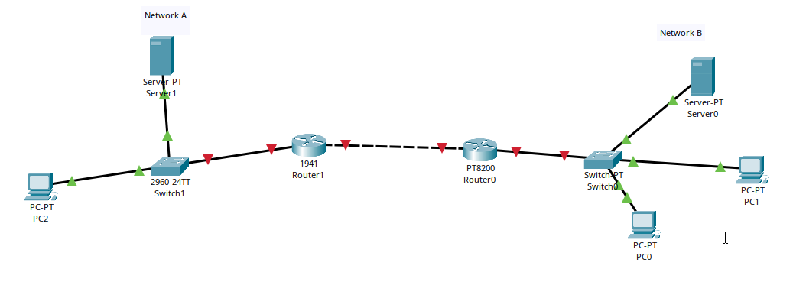
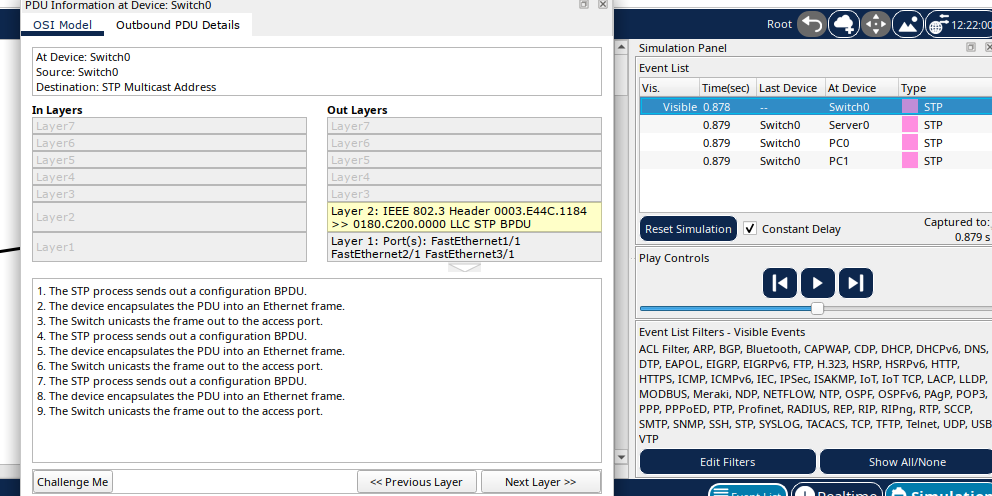

What is Cisco packet tracer?
Cisco packet tracer is a network simulation tool created by Cisco. It allows you to design, build and test networks without needing any physical hardware.
For anyone studying for the CCNA, packet tracer is one of the most important tools you'll use, it allows you to:
- test out concepts you're unfamiliar with
- apply theory to a simulated, hands-on environment
- Break things safely and understand why they broke
Instead of pure theory, this lets you see networks hands-on.

Network devices
When you first open packet tracer, the number of available devices can feel overwhelming, there are many devices from:
- routers
- switches
- hubs
- firewalls

You may also notice numbers like 4331? 1941? What do they mean?
They represent real Cisco hardware, like the 4331 router for example in packet tracer, behaves similarly to a real Cisco 4331 router. This is one of the reasons packet tracer is so powerful; you're learning on realistic equipment without spending any money.
Switches vs routers
At a basic level:
For example, a router is what allows your local network to communicate with other networks like the internet (which itself is just another network).
End devices
End devices are where data starts or ends on a network. Examples include:
- Pcs
- Laptops
- Servers
- Printers
A key point to note is that: a server is also an end device, just like a PC. The difference is the role; a server provides a service (such as websites or IP addresses) and it can be your PC, a phone or a laptop.
Connections and cables
Cisco packet tracer also includes cables types such as:
- Straight through cables
- Crossover cables
These cables distinctions are less important on modern networks but they're still useful for understanding how networking evolved, these will be covered in a future post.
Packet tracer can automatically choose the correct cable type which makes early lab builds a lot easier.
Example network topology
In this example, network A and network B are connected using a router. Devices on both networks communicate through a switch and the router connects the two networks together.

Simulation mode
Simulation mode allows you to:
- See how data is processed at each layer
- Observe protocols in action
- Watch packets move through the networks

This behaviour is aligned with the OSI model which explains how data moves through a network layer by layer. Protocols and OSI layers will be covered in future lessons, for now, it's enough to know that packet tracer allows you to explore networking in depth without breaking anything in real life.
This is very basic groundwork; future labs will go much deeper into how networks actually work and how to configure them properly. Thanks for reading!